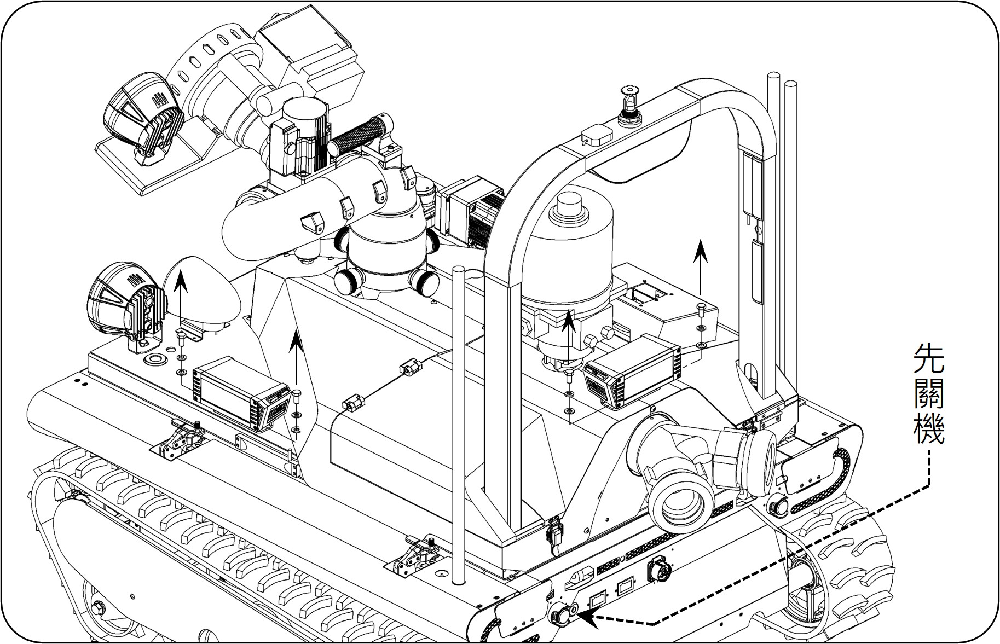
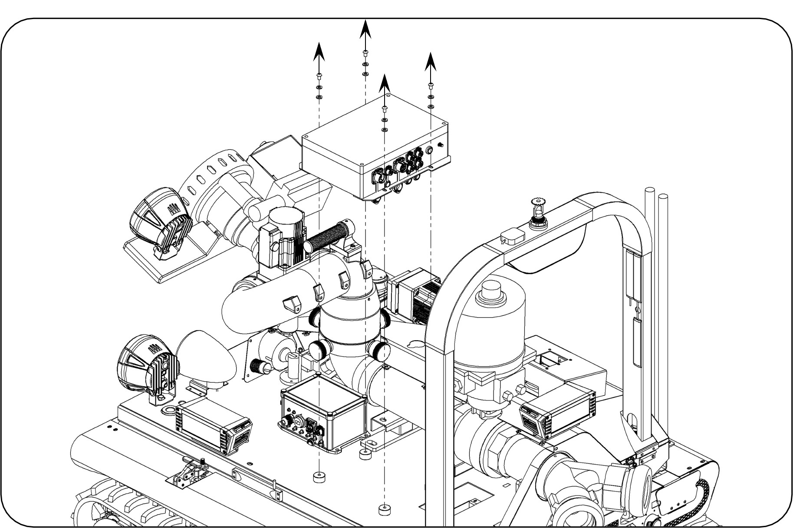
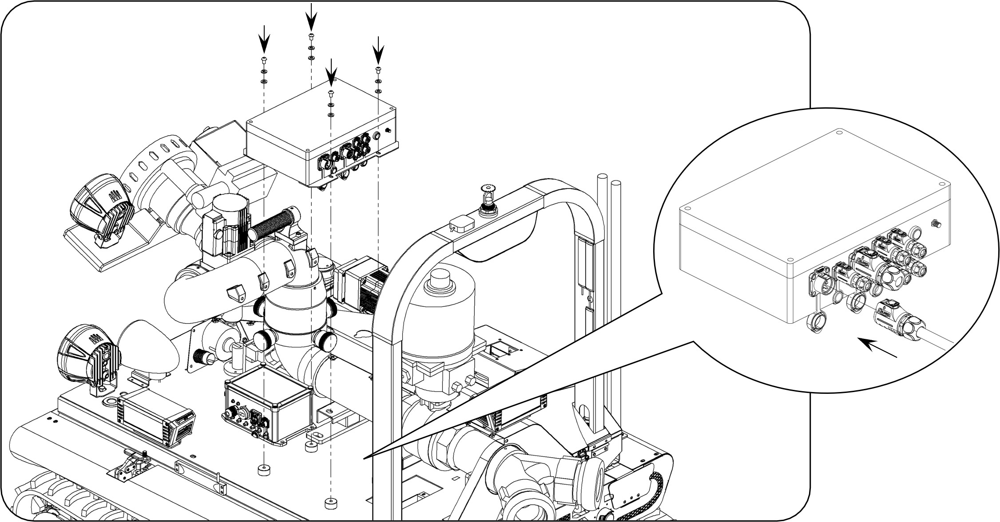

SOP-08：砲塔控制盒更換
故障描述： 瞄子功能無作動及無法開啟照明燈
原因分析： 砲塔控制盒損壞
| 項目 | 品名 / 料號 | 規格 / 數量 |
|---|
| 一般工具 | 六角板手組、13號開口板手 | - |
| 零組件 | 砲塔控制器組裝 (190010004) | FRT309/509 / 1 |
1. 關機與拆卸外部零件
先將機器人電源關機。使用開口板手拆卸機器人左側與後方的方燈。隨後使用六角板手將左半邊鈑金拆卸，並將左側天線轉鬆拆除。
🔧 工具：13號開口板手、六角板手組

圖 1：確認關機並拆卸方燈
2. 拔除線路與拆卸舊盒
打開鈑金後可看到砲塔控制盒，依序將所有連接線路拔除。使用六角板手將舊的砲塔控制盒拆卸下來，並將原有的兩個底座回裝至新的控制盒上。
🔧 工具：六角板手組

圖 4：更換控制盒並移裝底座
3. 安裝新控制盒與復原
將新的砲塔控制盒裝回原位，按照拆卸順序插回所有線路，最後鎖回鈑金與方燈。
🔧 工具：六角板手組、開口板手

圖 5：線路復原與最終鎖固
⬅️ 回到目錄首頁